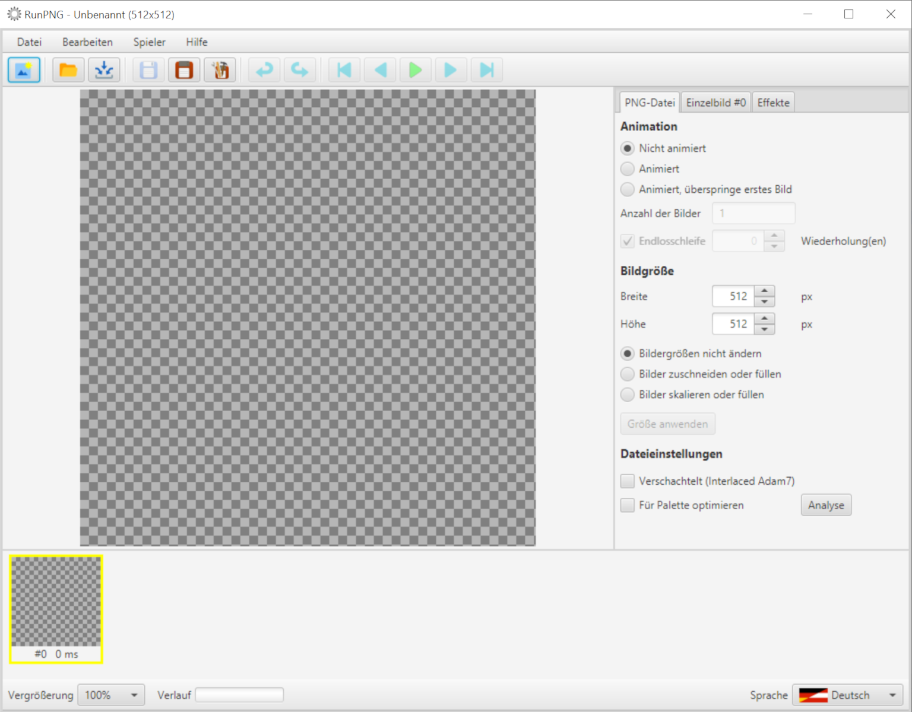
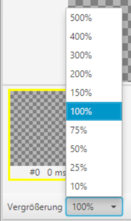
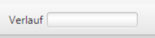
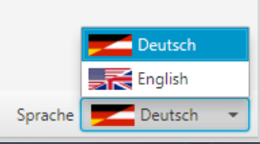

Gliederung der Bedienungsoberfläche
RunPNG ist als klassische Arbeitsplatzanwendung aufgebaut. Ganz oben die Titelzeile mit dem Dateinamen und der Dimensionierung des Gesamtbildes, dann die Menüleiste mit allen Funktionen, Werkzeugleiste mit Piktogrammen für den schnellen Zugriff ohne Menü, in der Mitte links das aktuell gewählte Bild, rechts eine Dialogleiste mit Tabulatoren geordnet für diverse Einstellungen, unten eine Leiste für die geladenen Einzelbilder und ganz unten noch eine nützliche Fußleiste.
Zu den einzelnen Elementen später mehr. Hier sollen nur kurz ein paar allgemeine Funktionen vorgestellt werden.
Datei Neu
Mit dem Menüpunkt Neu oder der dazu gehörigen Schaltfläche in der Werkzeugleiste wird die Applikation in den Anfangszustand zurück versetzt. Sollte es jedoch ungespeicherte Änderungen geben wird der Anwender gefragt, ob diese gespeichert werden sollen oder ob der ganze Vorgang abgebrochen werden soll.
Rückgängig und Wiederholen

Nahezu alle Bedienungsschritte - außer z. B. Datei Neu, Datei öffnen ... o. ä. - lassen sich rückgängig machen indem man auf den Menüpunkt oder die dazu gehörige Schaltfläche der Werkzeugleiste klickt (altenativ Tastenkombination STRG+Z). Ein rückgängig gemachter Bedienungsschritt lässt sich per Menü oder Schaltfläche auch wiederholen (alternativ Tastenkombination STRG+Y).
Vergrößerungsstufe

Die Vergrößerung in der Fußleiste bezieht sich auf die aktuelle Bilddarstellung in der Mitte. Manche Bilder sind recht klein, andere wiederum ziemlich groß. Mit der Vergrößerung bzw. Verkleinerung lässt sich die Ansicht anpassen.
Verlaufsanzeige

Klein und unscheinbar der Verlauf in der Fußleiste. Hier wird bei Aktionen wie Datei öffnen oder speichern der Fortschritt mit einem blauen Balken angezeigt. Wenn die Aktion vollständig abgearbeitet ist wechselt die Farbe nach grün und verblasst dann allmählich.
Spracheinstellung

"Last but not least" die Sprache unten rechts in der Fußleiste. RunPNG ist von Anfang an multilingual konzipiert. Zurzeit wird jedoch nur
Deutsch oder Englisch angeboten. Die Applikation orientiert sich an der eingestellten Systemsprache mit Priorität für Englisch. D. h. wenn das System
auf eine andere Sprache als Deutsch eingestellt ist startet RunPNG in englischer Sprache. Die Sprache lässt sich zur Laufzeit mittels der Auswahlliste
dynamisch umschalten.